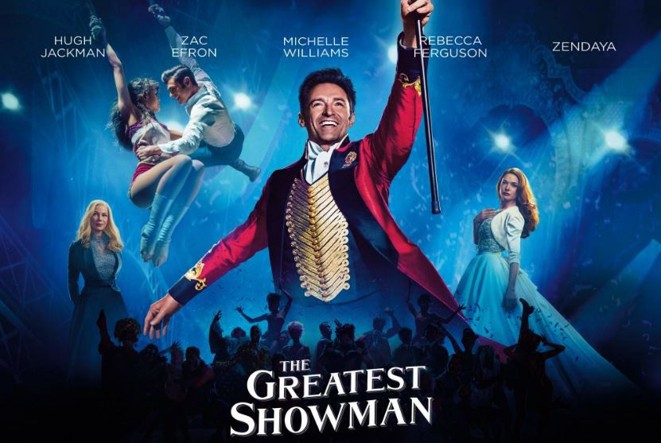
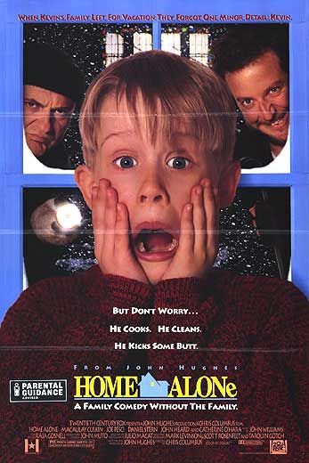
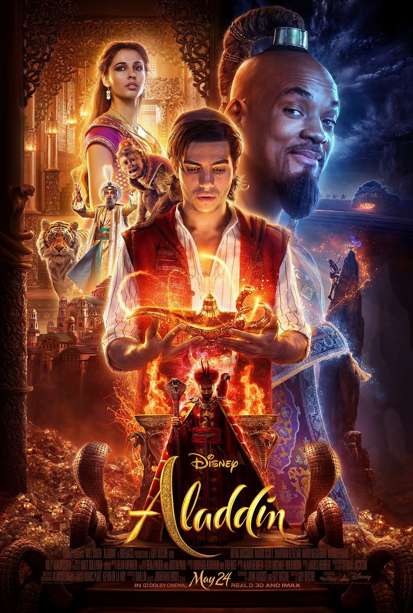

Film The Greatest Showman ini menceritakan seorang pria yang memiliki ambisi untuk mewujudkan mimpinya yaitu Barnum (Hugh Jackman).
Awalnya Barnum dipecat lantaran perusahaan tempat ia bekerja akan bangkrut. Barnum pun berpikir untuk meminjam uang ke bank dan membeli sebuah museum.

Home Alone
Film ini berkisah tentang seorang anak kecil bernama Kevin McCallister.
Keluarganya berencana pergi liburan ke Paris. Sebagai sosok yang paling kecil,
Kevin McCallister sering diganggu oleh saudara-saudaranya. Karena kesal, dia pun berharap keluarganya menghilang dari hidupnya.

Interstellar
Interstellar menceritakan tentang keadaan bumi di masa depan yang sudah tidak dapat dihuni lagi.
Banyak makhluk hidup yang sudah punah karena terjangkit dengan wabah penyakit.
Begitu juga dengan tanaman, hampir semua tanaman tidak layak dimakan karena sudah terinfeksi dengan penyakit.
Saat itu hanya jagung yang dapat dikonsumsi manusia agar dapat bertahan hidup.
Aladdin
Aladdin, seorang pencuri muda yang baik hati (sering disebut "tikus jalanan") yang tinggal di kota Arab,
Agrabah, bersama dengan monyet peliharaannya, Abu, menyelamatkan dan berteman dengan Putri Jasmine,
yang menyelinap keluar dari istana untuk menjelajah, bosan dengan hidupnya yang terlindung.

Now You See Me
Film ini mengisahkan empat pesulap jalanan, yaitu J. Daniel Atlas, Merritt McKinney,
Henley Reeves, dan Jack Wilder. Mereka mendapatkan panggilan misterius ke sebuah alamat
yang tidak jelas dengan kerahasiaan di dalamnya. Setahun kemudian, mereka tampil sebagai
Four Horsemen pada sebuah pertunjukan di Las Vegas.